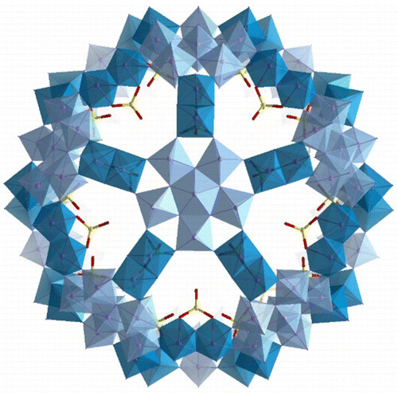

Nanomolecular Metal Oxides
Nanomolecular metal oxides are a unique family of nanometric inorganic molecules composed of a large number of metal centers are usually in their highest oxidation state connected through a network of bridging and terminal oxygen ligands. However, behind this apparent simplicity lies an overwhelming amount of structural al chemical diversity emerging since nearly all of the elements of the periodic table have been incorporated into their structures. Nowadays, the use of fully inorganic nanomolecular metal oxides is emerging as a rewarding strategy to design innovative homogeneous catalysts with improved recycling performance and stability. Indeed, these species provide a wide range of structures and coordination geometries with the ability to include one or multiple transition metal centers displaying catalytic activity in the same species.
My group is interested in the development of multilevel methodologies bridging classical and quantum mechanics to study nanomolecular metal oxides. We are interested in the dynamic properties and catalytic properties {Mo132} and {Mo368} (Figure 1), which are two of the most know nanomolecular metal oxides structures. We are also interested in actinide nanomolecular metal oxides and peroxides since their self-assembly of in aqueous solution under ambient conditions is unique in actinide chemistry, and has a wide range of potential applications in fabrication and reprocessing of actinide-based materials (e.g. nuclear fuel cycle).
 Figure 1: Structure of {Mo132} (left) and {Mo368} (right) nanomolecular metal oxides.